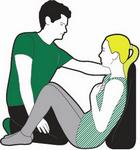

Heart Attack
A heart attack happens when the supply of blood to the heart is suddenly blocked, usually by a blood clot.
Lots of people make a full recovery from a heart attack, but there’s a serious risk that the heart might stop beating – called a cardiac arrest.
It’s vital that you treat someone having a heart attack straight away, otherwise they could die.
Steps
- Call 999 or 112 for medical help and say you think someone is having a heart attack.
- Then, help move them into the most comfortable position. The best position is on the floor leaning against a wall with knees bent and head and shoulders supported. This should ease the pressure on their heart and stop them hurting themselves if they collapse.

- Give them a 300mg aspirin, if available and they're not allergic, and tell them to chew it slowly.
- Be aware that they may develop shock. Shock does not mean emotional shock, but is a life-threatening condition, which can be brought on by a heart attack.
- Keep checking their breathing, pulse and level of response.
- If they lose responsiveness at any point, open their airway, check their breathing, and prepare to treat someone who has become unresponsive. You may need to do CPR.